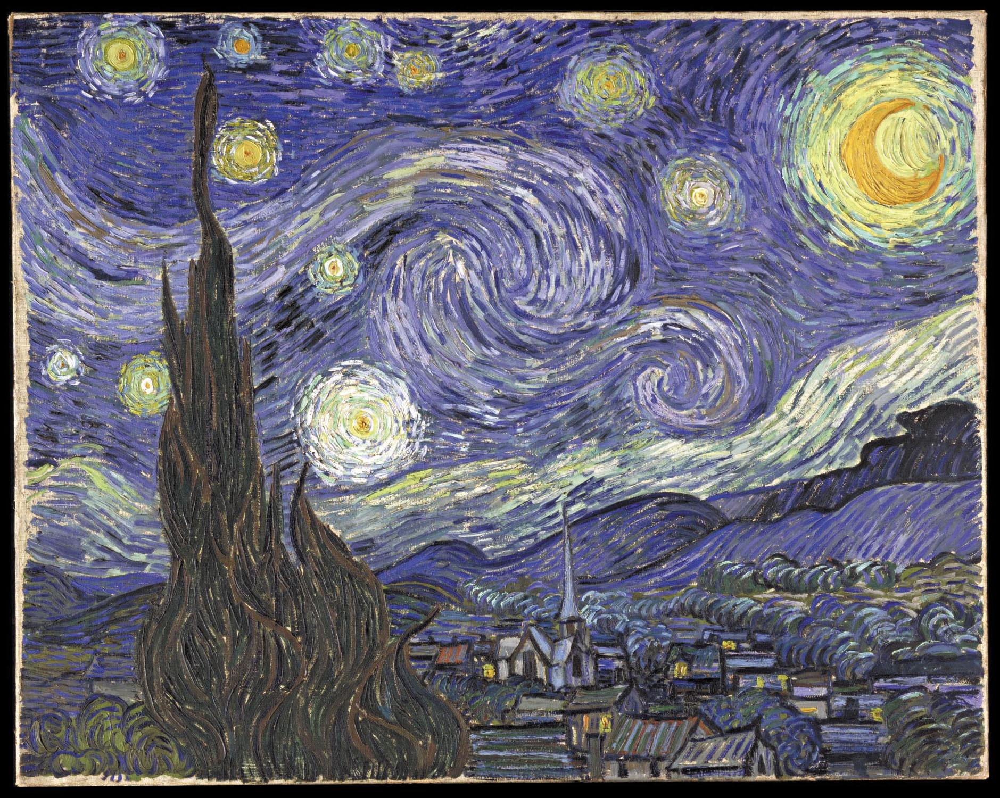
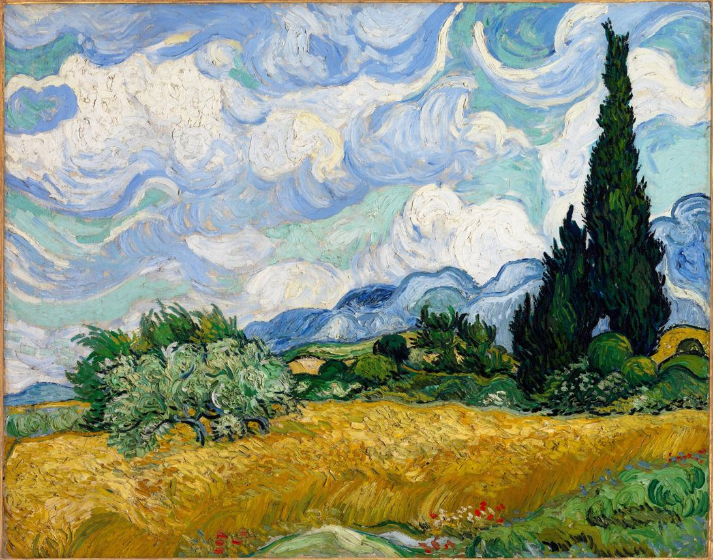
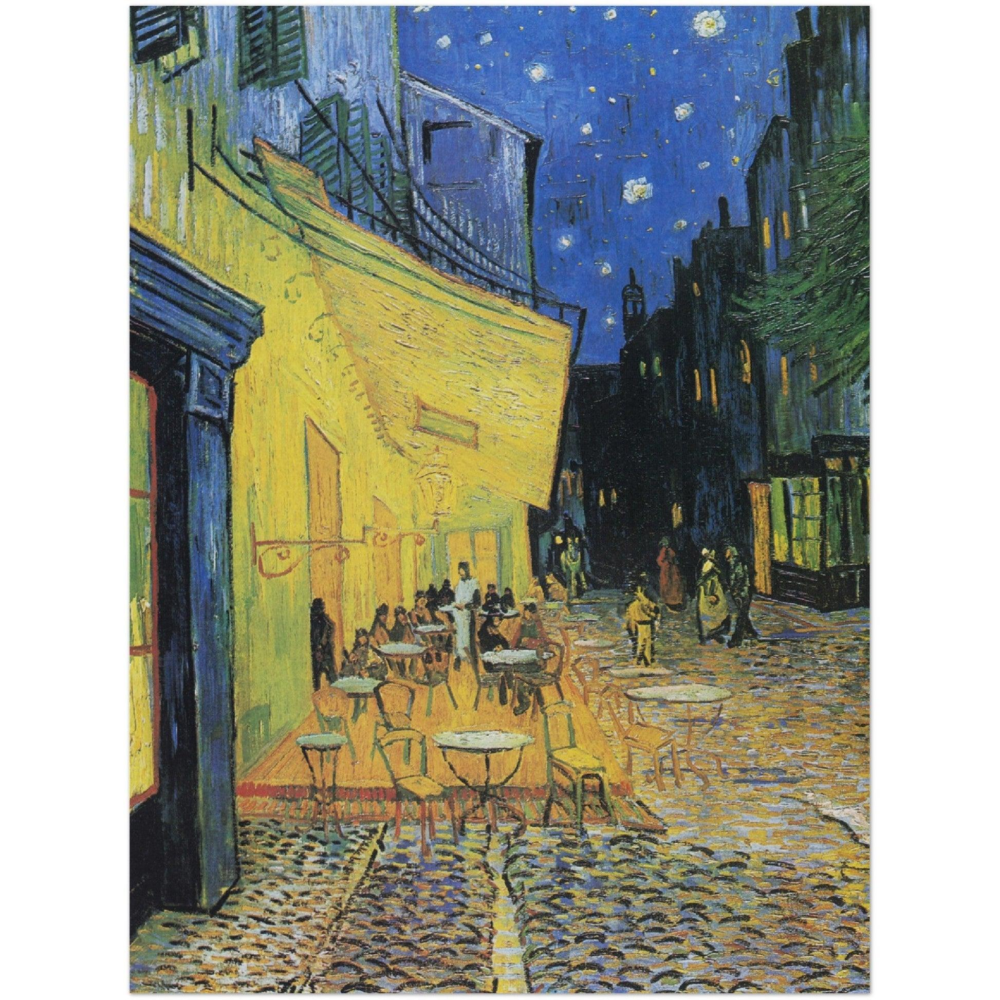
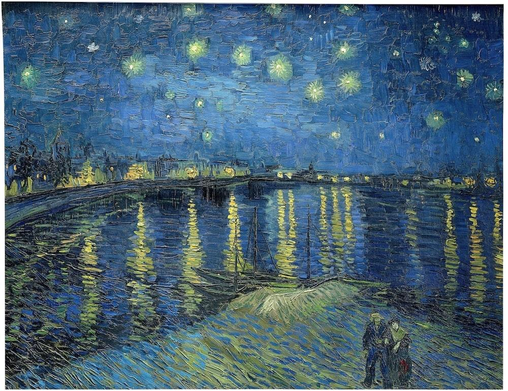

Year: 1889
Category: Post-Impressionism
The Starry Night is a famous painting by Vincent van Gogh. It shows a beautiful night sky filled with swirling stars above a peaceful village. The painting is known for its vibrant colors and expressive brushstrokes.

Vincent van Gogh

Vincent van Gogh

Vincent van Gogh